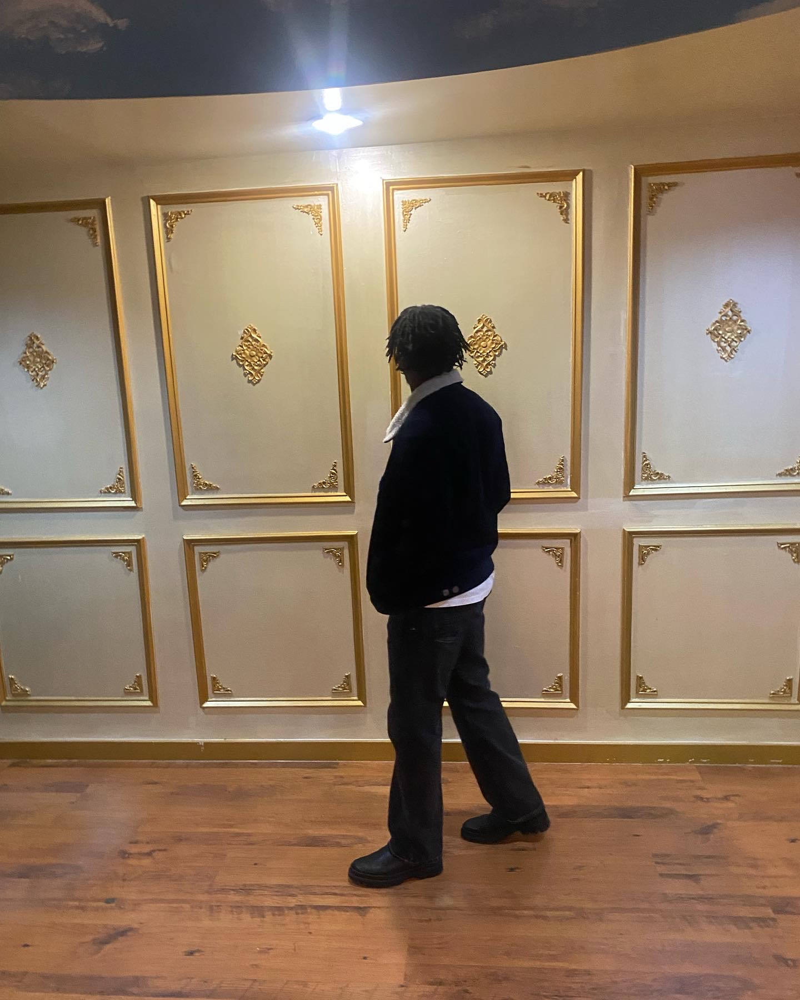

Jomi Okuwobi
aspiring Software Engineer
Phone
Email
jomilojuokuwobi@gmail.com
Location
Fort Worth, Texas
About Me
I'm an aspiring software engineer currently at the University of Texas Arlington. I am primarily interested in Full Stack Development and Artificial Intelligence. I enjoy simple, beautiful, and intuitive designs.
My goal is to bring my ideas and others to life in the most creative way possible.

Projects
- Vector Library
- Developed a custom vector library utilizing the c programming language to facilitate efficient vector computations and manipulations
- Abstract Data Types
- Developed C code to incorporate undo and redo functionality into human-computer interfaces, allowing users to reverse or revert actions and restore previous states. Implemented an email to do application that utilizes abstract data types (ADTs) to organize tasks in descending order of priority.
- Burglar Alarm System
- Utilized basic UDP network protocol and server client network communications to develop a burglar alarm client application that communicates with a central alarm monitoring server.
Education
- University of Texas Arlington
- Bachelor of Science: Software Engineering
- Academic Year
- Junior
- Relevant courses
-
- Data Sturctures and Algorithms
- Intermediate Programming
- Discrete Structures
- Object oriented programming

Technologies Used
- Python
- HTML & CSS
- C
- C++
- SwiftUI
- Java